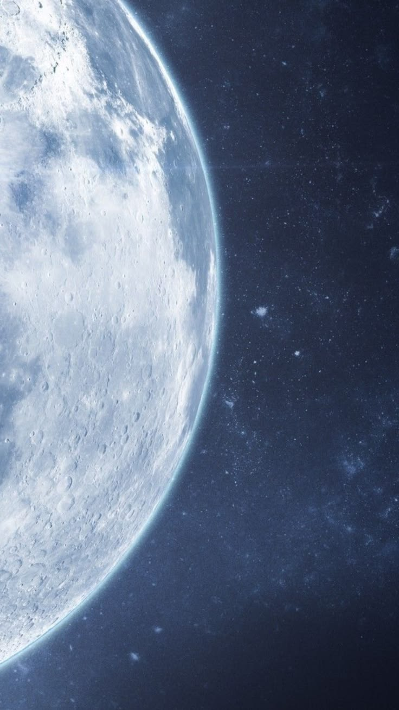

Curiosity has no horizon.
We are a quiet gathering of dreamers, engineers, and scientists who believe space is not a destination, it is an invitation. Nektara exists to hold that invitation open.
Wonder is the first instrument we ever built.
Long before telescopes or rockets, humanity looked up and asked why. That question has never stopped guiding us. At Nektara, we build the instruments, but we protect the question.
We are not in the business of persuading anyone that space matters. We simply try to stand quietly beneath it, and build tools worthy of the view.

Three quiet commitments
Not a mission statement so much as a way of working , the disposition we bring to every instrument, every launch, every late night at the console.
Go where the questions are
We chase the places where our understanding runs out, the edge of the map, the gap in the data, the thing no one has measured yet.
Let the evidence lead
Every mission is designed to be surprised by what it finds. We build instruments patient enough to notice what we didn't expect.
Keep the awe intact
Data without wonder is just noise. We try to bring back not only findings, but the feeling of standing beneath a sky that goes on forever.
A few of the journeys underway
From lunar dust surveys to interstellar listening posts, each mission asks a different question of the dark.
Halcyon Orbiter
Mapped the mineral composition of the lunar south pole, completing its survey and returning the most detailed shadow-region atlas ever assembled.
Vesper Deep Listening Array
A constellation of quiet-orbit radio telescopes currently tuning into the faint murmur of the early universe, far from Earth's electromagnetic noise.
Aphelion Voyage
A proposed crewed journey to a slow, stable orbit beyond the asteroid belt — designed to study what long solitude in deep space does to the human mind.
"We did not go to space to leave the Earth behind. We went to remember how small our questions were, and how large they could become."— Nektara Aerospace, founding charter